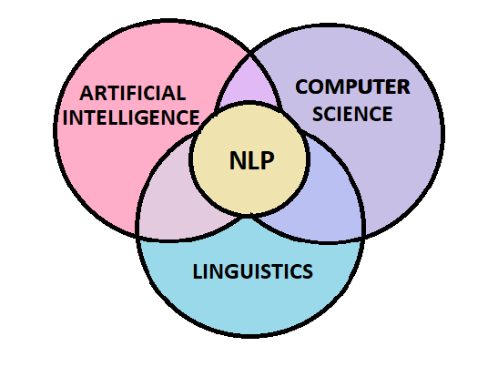
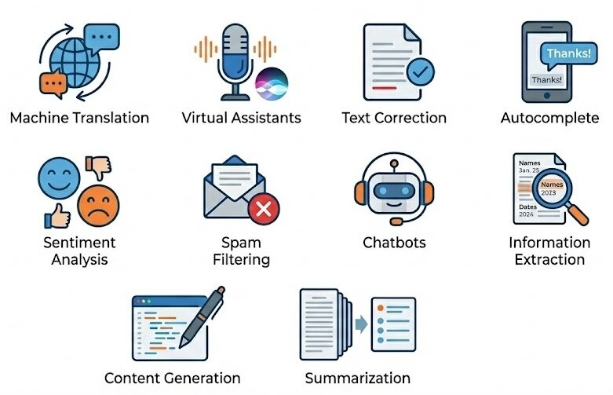
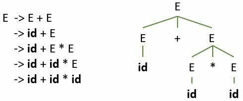
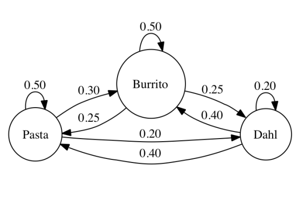
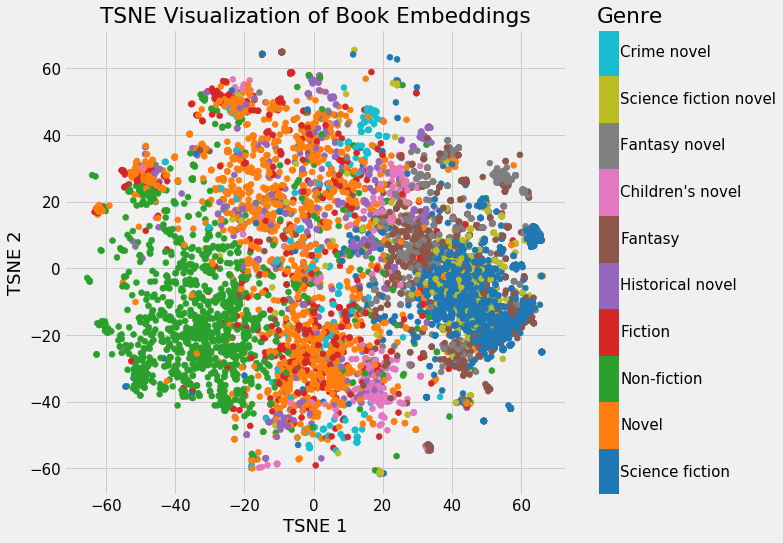
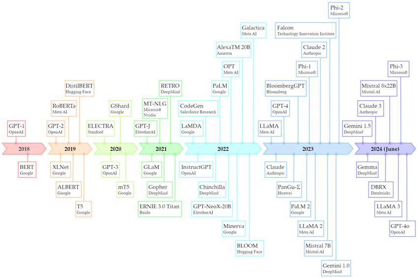
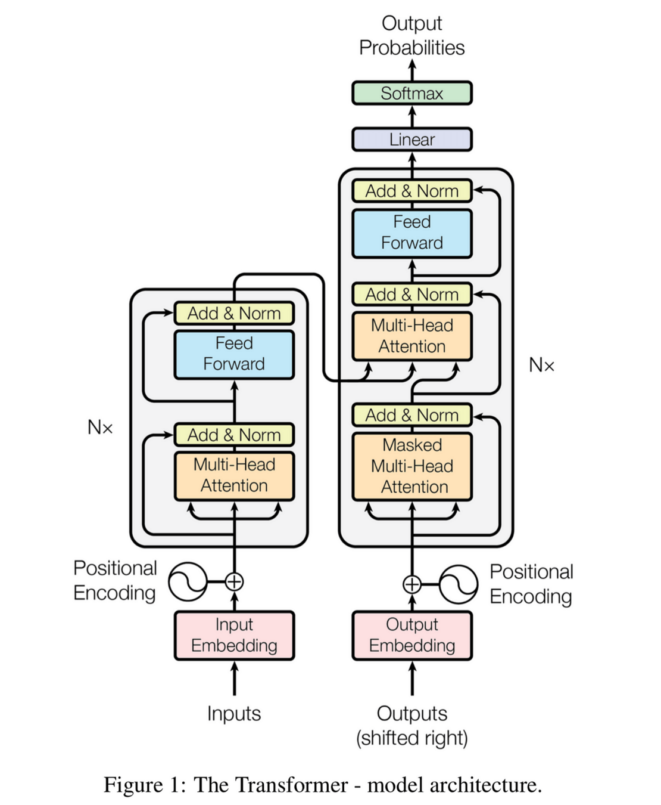
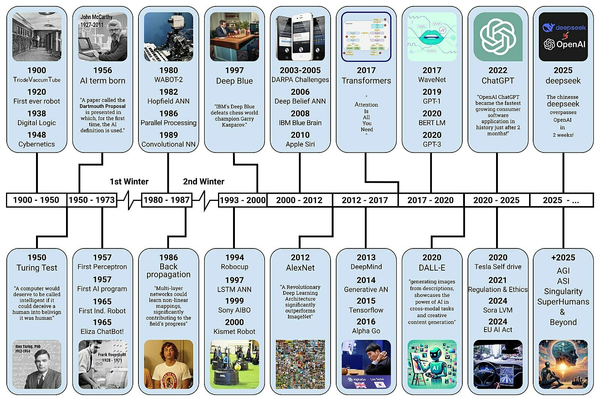

Introduction to Natural Language Processing (NLP)
Chadi Helwe, PhD
CSC 464: Deep Learning for Natural
Language Processing
Introduction to NLP
Who Am I?
I am Chadi Helwe an Assistant Professor in Computer Science at the Lebanese American University.
Previously:
-
Postdoctoral researcher at KAUST (Saudi Arabia)
-
Postdoctoral researcher at INRIA (France) in collaboration with CWI Amsterdam (Netherlands)
Education:
-
PhD in Computer Science (Specializing in AI) - Institut Polytechnique de Paris (France)
-
MSc in Computer Science - American University of Beirut (Lebanon)
-
BSc in Computer Science - Notre Dame University (Lebanon)
What is Natural Language Processing?
Introduction to NLP
What is NLP?
A branch of Artificial Intelligence (AI), Computer Science, and Linguistics that focuses on the interactions between computers and natural languages.
The technology that enables computers to read, understand, interpret, and generate human language.

Introduction to NLP
Applications of NLP

Introduction to NLP
Why NLP is Hard?
Ambiguity
-
Lexical: "I went to the bank." (River or Money?)
-
Syntactic: "I saw the man with the telescope." (Who has the telescope?)
Non-Standard Language
-
We don't speak like textbooks.
-
Examples: Slang ("That's lit"), Emojis (😂 vs 😭), Misspellings ("c u l8r").
Common Sense
-
Machines lack "common sense."
-
Example: "The trophy didn't fit in the suitcase because it was too big."
-
Humans know "it" refers to the trophy.
-
Grammatically, "it" could be the suitcase.
-
Sarcasm & Irony
-
"Oh, great! Another flat tire." (The computer sees "Great" and thinks this is a positive sentence).
The Evolution of NLP
Introduction to NLP
Symbolic NLP (1950s - Early 1990s)
Core Idea: Symbolic NLP systems use formal logic and hand-crafted rules.
Key Approaches: Regular Expressions, Context-Free Grammars (CFG), Logic programming (Prolog).

The "Win": Highly interpretable and precise for specific, closed domains.
The "Fail": Fails on unseen data; requires expensive expert labor to write rules.
Introduction to NLP
Statistical NLP (1990s - 2010s)
Core Idea: Instead of hand-written rules, systems learn probabilistic patterns from large text corpora.
Key Approaches: N-Grams, Hidden Markov Models (HMM), Naive Bayes & SVMs.

The "Win": Could handle "noisy" real-world data more effectively than fragile rule-based systems, with no need for linguists to create thousands of rules; simply provide the features of data points.
The "Fail": It requires large annotated datasets (corpora), struggles with words or phrases it hadn't encountered before, and has a shallow understanding of the context.
Introduction to NLP
Neural NLP (2013 - Present) (1/2)
Core Idea: Representing words as dense vectors (lists of numbers) and using deep neural networks to learn hierarchical features end-to-end.
Key Approaches: Word Embeddings, RNNs & LSTMs, and Transformers
The "Win": Outperformed benchmarks in translation, summarization, and QA, and can handle ambiguity, slang, and context far better than previous methods.
The "Fail": We often do not understand why the model made a specific decision. Training requires large GPUs and considerable energy, and it can confidently generate incorrect information.

Introduction to NLP
Neural NLP (2013 - Present) (2/2)

Introduction to Deep Learning
Introduction to NLP
What is Deep Learning?
Deep learning is a branch of Artificial Intelligence that uses multi-layered neural networks to automatically learn complex patterns from large datasets, enabling computers to perform tasks such as image recognition, natural language processing, and decision-making without specific programming for each task.

Introduction to NLP
Why Now?

Algorithms
Graphical Processing Units (GPUs)
Data
Introduction to NLP
Applications of Deep Learning

Introduction to NLP
Evolution of Deep Learning
